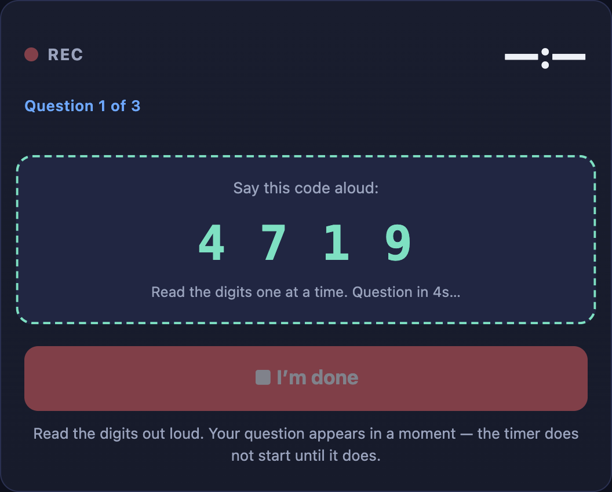
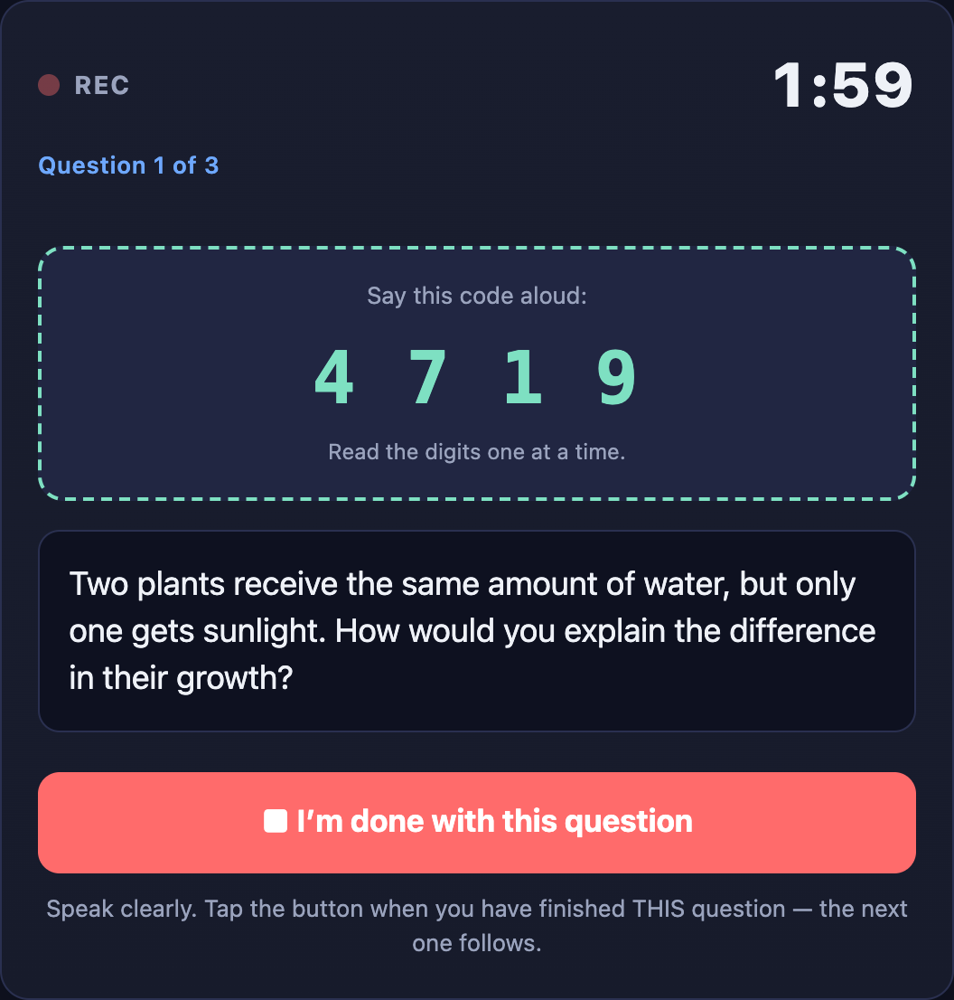
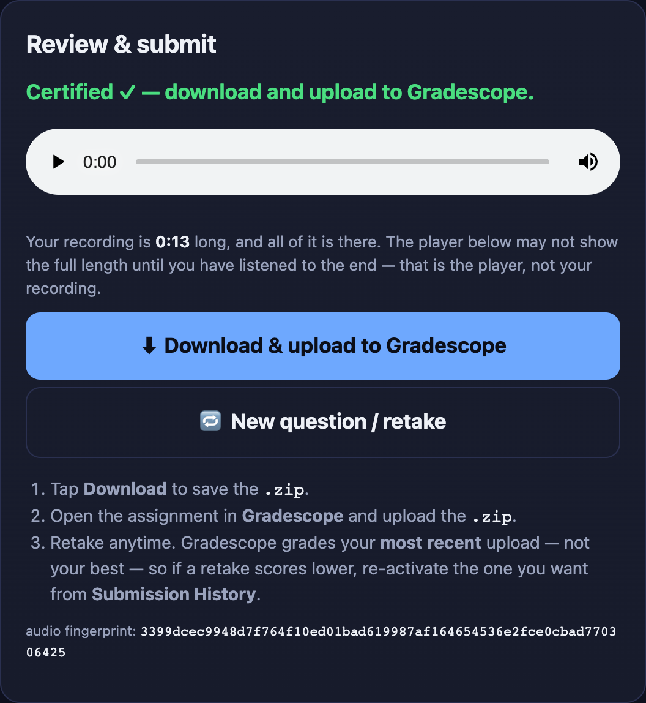

Student guide / Quickstart
Your ideas. Out loud.
Take a short oral quiz in your browser, then submit your recording to Gradescope. Explain what you understand in your own words.
Your assignment link and personal quiz key • A phone or computer with a microphone • A quiet spot and a steady connection
Open the right quiz
Use the link your instructor posted. Check the course and quiz name at the top. Enter your own quiz key, shared privately with you (e.g., a text grade item on Brightspace), and select Continue.
Allow the microphone
Before starting, select any approved extra-time accommodation. Select Allow mic & start, then allow microphone access. Keep this tab open and your screen awake. Recording starts before the question appears.
Say the digits. Explain your answer.
Read the displayed code aloud, one digit at a time. When the question appears, its timer starts. Speak naturally; you can pause to think or correct yourself. Answer the question without saying your name or ID.
Finish every question and every code
Select I'm done with this question when ready. Read each new code aloud and continue to the next question. After the final question, read the last code and select Finish & submit. You cannot go back to an earlier answer.
Download, then upload to Gradescope
On Review & submit, download the .zip. Open the matching Gradescope assignment in your browser and upload that file. Check that Gradescope received it. The download alone does not submit your work.






Actual OralScale screens with staged demonstration data. Your quiz and timing may differ. Tap an image to enlarge.
A little more guidance
Good questions. Clear answers.
Start here if you are unsure. Your instructor sets the timing, deadline, and grading policy for your course.
Can I try again? Which attempt counts?
Yes. Retake with newly drawn questions and submit before your deadline. Gradescope grades the active submission, usually your newest upload; choose an earlier one in Submission History if you prefer it. Abandoning a question may trigger a short wait before restarting.
How do I use an approved extra-time accommodation?
Before recording, open the extended-time option and manually select your approved extension. Your instructor can verify this selection against your approved accommodations. If the page does not offer the time you need, contact your instructor before starting.
How long do I have? Must I use all the time?
Your instructor sets the time and number of questions. You may finish early. Code-reading time comes before the answer timer. Finish within the countdown; any grace period is just for finishing your sentence.
Where is my quiz key?
Look where your instructor shared it privately, such as a text grade item on Brightspace. You can also retrieve it from Gradescope feedback by submitting without a recording. You still need to record and upload your quiz afterward. Keep your key private.
My microphone, connection, or upload failed. What now?
Allow microphone access, check your connection, and reopen the current quiz link. Upload through the Gradescope website, not its mobile app. Save any error code or offered backup. An UNCERTIFIED BACKUP receives 0 automatically; try a fresh attempt or ask staff to review it.
Why do I have to say the codes?
Codes help confirm you answered live. Read every set before, between, and after your answers, one digit at a time. Missed codes are flagged; missing half or more scores 0. If you said them, ask staff to review your recording.
Does the quiz server receive my identity or recording?
No audio, name, or email is sent to the quiz server. Your quiz key identifies the attempt, alongside recording fingerprints and timing information. You upload audio only to Gradescope, where your instructor can listen. Identity validation happens inside the Gradescope autograder.
How is AI used to assess my answer?
Your transcript is assessed by a local AI model inside Gradescope or sent to a more advanced AI model for potentially more accurate analysis. External assessment receives no student identifier, and detected personal details are removed from the text. Grades are then assigned locally in Gradescope. Avoid saying personal details.
Gradescope help: Assignment setup & browser uploads · Submission history. Course policies take precedence.